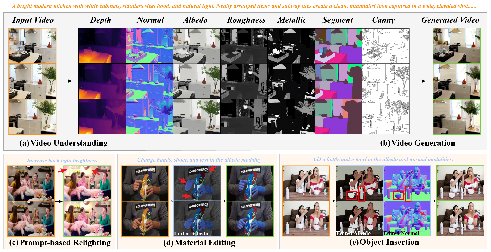
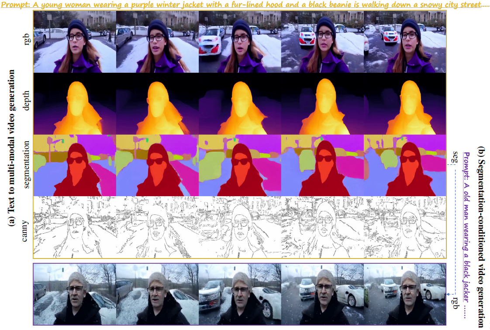
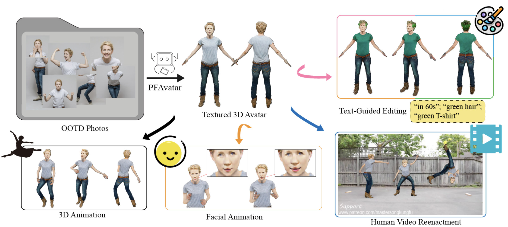
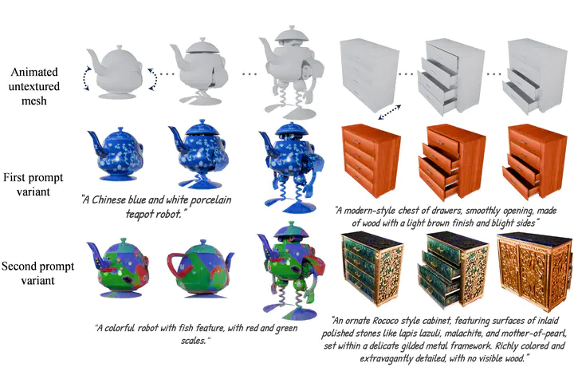
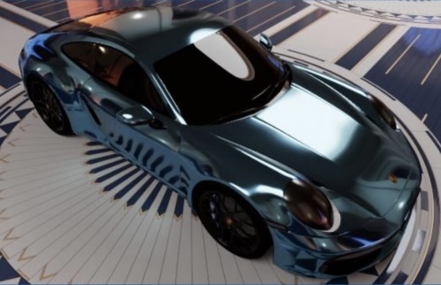
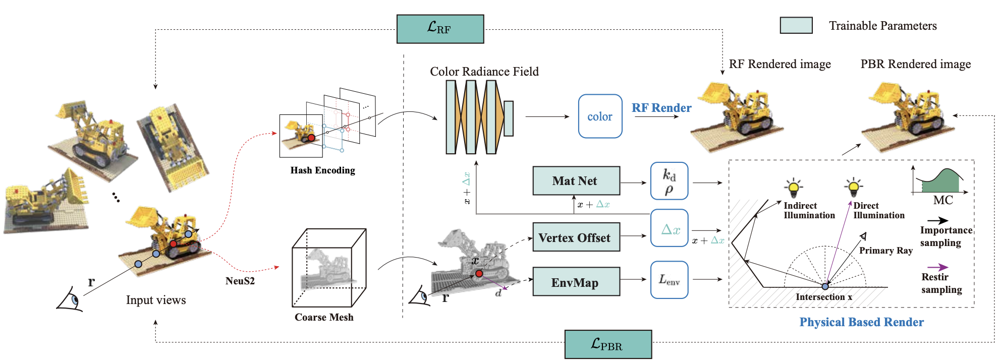
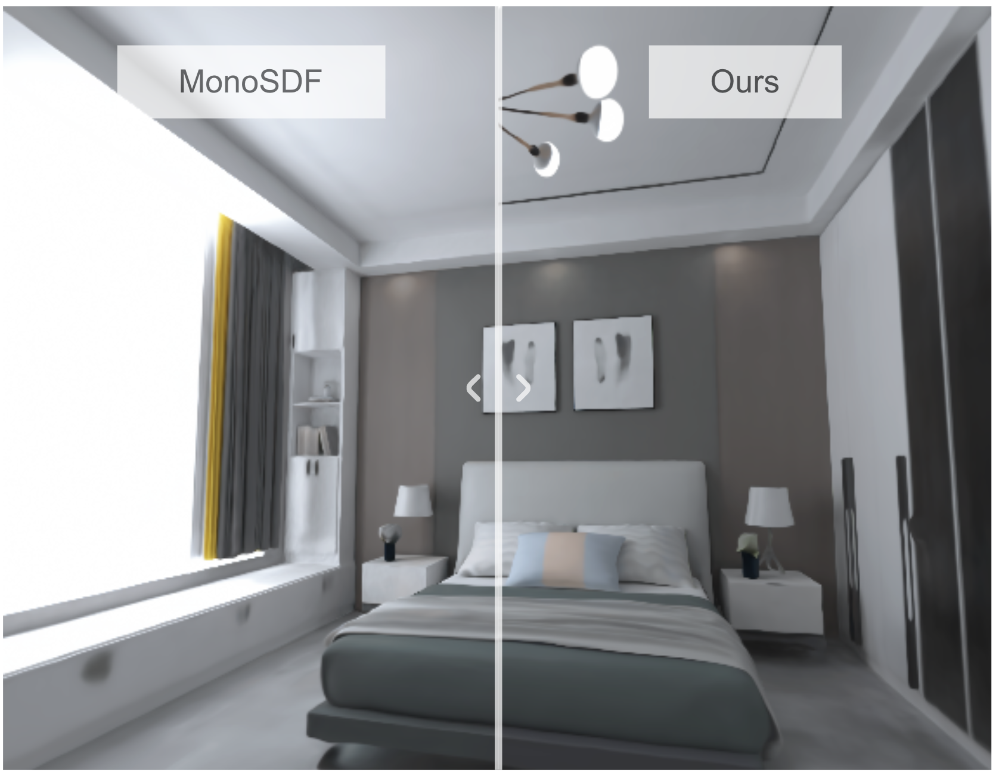
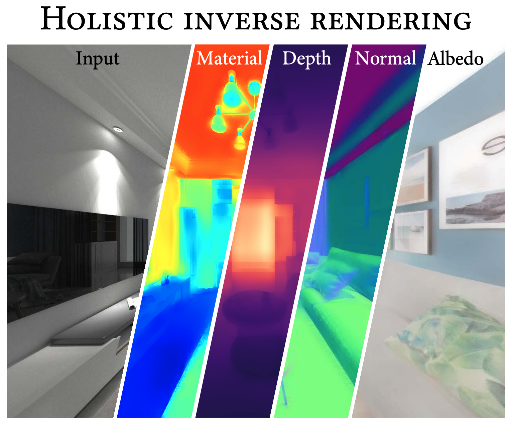

|
Dianbing Xi I'm a final-year Ph.D. student in the Advanced Rendering and Creativity (ARC) Group at the State Key Laboratory of CAD&CG, Zhejiang University, supervised by Prof. Rui Wang and Prof. Yuchi Huo. I have been fortunate to collaborate with Dr. Jiepeng Wang at TeleAI, Prof. Yuan Liu at the Hong Kong University of Science and Technology, and Prof. Yuliang Xiu at Westlake University. |
{kind=link}
ResearchMy research primarily focuses on Computer Graphics and Artificial Intelligence Generated Content (AIGC). I currently work on controllable video generation, which I see as a promising new paradigm for future rendering. I also have prior experience in 3D avatar generation, inverse rendering, and neural rendering. !!! I am expected to complete my Ph.D. in June 2026 and am actively seeking research positions in industry or postdoctoral opportunities. Feel free to contact me at db.xi@zju.edu.cn regarding relevant positions or collaboration opportunities. |
Selected Publications |
|  |
CtrlVDiff: Controllable Video Generation via Unified Multimodal Video
Diffusion
Dianbing Xi, Jiepeng Wang, Yuanzhi Liang, Xi Qiu, Jialun Liu, Hao Pan, Yuchi Huo, Rui Wang, Haibin Huang, Chi Zhang, Xuelong Li arXiv, 2025 project page / arXiv CtrlVDiff unifies forward and inverse video generation within a single model, enabling the extraction of all modalities in a single pass. It provides layer-wise control over appearance and structure, facilitating applications such as material editing and object insertion. |
|  |
OmniVDiff: Omni Controllable Video Diffusion for Generation and Understanding
Dianbing Xi, Jiepeng Wang, Yuanzhi Liang, Xi Qiu, Yuchi Huo, Rui Wang, Chi Zhang, Xuelong Li AAAI, 2026 project page / arXiv OmniVDiff enables controllable video generation and understanding in a unified video diffusion framework. |
|  |
PFAvatar: Pose-Fusion 3D Personalized Avatar Reconstruction from Real-World Outfit-of-the-Day Photos
Dianbing Xi, Guoyuan An, Jingsen Zhu, Zhijian Liu, Yuan Liu, Ruiyuan Zhang, Jiayuan Lu, Yuchi Huo, Rui Wang AAAI, 2026 project page / arXiv PFAvatar reconstructs and edits personalized avatars from OOTD photos using pose-aware diffusion models and 3D-SDS, overcoming previous method limitations and supporting editing and animation. |
|  |
AniTex: light-geometry consistent PBR Material Generation for Animatable Objects
Jieting Xu, Ziyi Xu, Yiwei Hu, Guoyuan An, Rengan Xie, Zhijian Liu, Dianbing Xi, Wenjun Song, Yuchi Huo, Rui Wang SIGGRAPH ASIA, 2025 project page / arXiv AniTex generates high-quality, temporally consistent PBR materials for animated 3D objects using a two-stage diffusion pipeline, achieving realistic multi-view textures and outperforming existing static-focused methods. |

|
IntrinsicControlNet: Cross-distribution Image Generation with Real and Unreal
Jiayuan Lu, Rengan Xie, Zixuan Xie, Zhizhen Wu, Dianbing Xi, Qi Ye, Rui Wang, Hujun Bao, Yuchi Huo ICCV, 2025 project page / arXiv IntrinsicControlNet uses intrinsic images and cross-domain control to generate photorealistic yet explicitly controllable images, combining rendering-level precision with diffusion-model realism while bridging gaps between synthetic and real data. |
|  |
Dual-Band Feature Fusion for All-Frequency Neural Global Illumination
Shaohua Mo, Chuankun Zheng, Zihao Lin, Dianbing Xi, Qi Ye, Rui Wang, Hujun Bao, Yuchi Huo SIGGRAPH, 2025 project page / arXiv We propose a dual-band neural GI framework using object-centric feature grids and single-bounce queries to fuse low- and high-frequency illumination, enabling high-quality multi-frequency dynamic reflections beyond prior GI and denoising methods. |
|  |
MIRReS: Inverse Rendering using Multi-Bounce Path Tracing and Reservoir Sampling
Yuxin Dai, Qi Wang, Jingsen Zhu, Dianbing Xi, Yuchi Huo Chen Qian, Ying He ICLR, 2025 project page / arXiv We propose MIRReS, a two-stage inverse rendering framework that recovers explicit geometry, materials, and lighting using multi-bounce path tracing with reservoir-sampled gradients, achieving accurate intrinsic decomposition and SOTA performance. |
|  |
I^2-SDF: Intrinsic Indoor Scene Reconstruction and Editing via Raytracing in Neural SDFs
Jingsen Zhu, Yuchi Huo, Qi Ye, Fujun Luan, Jifan Li, Dianbing Xi, Lisha Wang, Rui Tang, Wei Hua, Hujun Bao, Rui Wang CVPR, 2023 project page / arXiv We introduce I^2-SDF, a neural SDF–based inverse rendering framework that reconstructs indoor geometry, materials, and radiance via differentiable MC ray tracing, enabling high-quality reconstruction, relighting, and editing with SOTA performance. |
|  |
Learning-based Inverse Rendering of Complex Indoor Scenes with Differentiable Monte Carlo Raytracing
Jingsen Zhu, Fujun Luan, Yuchi Huo, Zihao Lin, Zhihua Zhong, Dianbing Xi, Jiaxiang Zheng, Rui Tang, Rui Wang, Hujun Bao SIGGRAPH Asia, 2022 project page / arXiv We propose a single-image inverse rendering framework using differentiable MC ray tracing and uncertainty-aware out-of-view lighting prediction, enabling accurate geometry, lighting, and material recovery with photorealistic edits beyond prior methods. |
Experience |
|
|
|
©Dianbing Xi. Last updated: . |